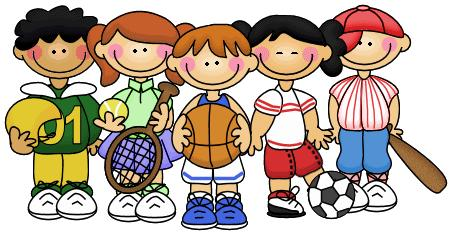

La educación física es una disciplina pedagógica que basa su intervención en el movimiento corporal, para estructurar primero y desarrollar después, de forma integral y armónica, las capacidades físicas, afectivas y cognitivas de la persona, con la finalidad de mejorar la calidad de la participación humana en los distintos ámbitos de la vida, como son el familiar, el social y el productivo. En este sentido la educación física y el deporte deben ser retomados como medios de formación por cuanto se concretan en actividades de carácter lúdico que permiten el desarrollo de las dimensiones corporal cognitiva, comunicativa, ética y afectiva del hombre.
La Educación Física constituye una asignatura que integra acciones principalmente de carácter físico. Se imparte en los centros educativos desde edades tempranas y cumple con objetivos precisos en cada una de las etapas o períodos de desarrollo biológico y sicológico de los niños y jóvenes en el proceso de enseñanza-aprendizaje; contribuyendo en la formación integral de los estudiantes.

La educación física alcanza sus metas formativas valiéndose de medios o formas de trabajo determinadas. Algunas de ellas son el deporte educativo, el juego motor, la iniciación deportiva, etc.
- Juego motor: Desde un enfoque antropológico cultural el juego es entendido como una acción u ocupación libre, que se desarrolla dentro de unos límites temporales y espaciales determinados, según reglas absolutamente obligatorias, aunque libremente aceptadas, acción que tiene su fin en sí misma y va acompañada de un sentimiento de tensión y alegría y de la conciencia de «ser de otro modo» que en la vida corriente. En educación física se entiende el juego motor como una actividad lúdica (del latín ludus, diversión o entretenimiento), encaminada hacia la obtención de un propósito motor en una determinada situación motriz. De esta forma, encontramos diversos tipos de juegos: juegos naturales, juegos de reglas, juegos modificados, juegos cooperativos, etc. Cabe destacar que el juego no es solo un medio educativo que permite el logro de los propósitos de la educación física, sino también contiene en sí mismo toda la riqueza y valor educativo de un fin de la educación física.
- Iniciación deportiva: Es un proceso de aprendizaje de un deporte teniendo en cuenta, primeramente, la persona que aprende, así como los objetivos que se pretenden alcanzar, la estructura del deporte y la metodología que se utiliza. En el enfoque de la motricidad inteligente se parte de la enseñanza de la estrategia, para después pasar a la técnica. En la iniciación deportiva se adquieren las nociones de un deporte. Al llevar a cabo la iniciación deportiva se puede abonar, por ejemplo, el desarrollo del pensamiento estratégico, la integración de la corporeidad, entre otras competencias educativas a desarrollar.
- Iniciación deportiva: Es un proceso de aprendizaje de un deporte teniendo en cuenta, primeramente, la persona que aprende, así como los objetivos que se pretenden alcanzar, la estructura del deporte y la metodología que se utiliza. En el enfoque de la motricidad inteligente se parte de la enseñanza de la estrategia, para después pasar a la técnica. En la iniciación deportiva se adquieren las nociones de un deporte. Al llevar a cabo la iniciación deportiva se puede abonar, por ejemplo, el desarrollo del pensamiento estratégico, la integración de la corporeidad, entre otras competencias educativas a desarrollar.